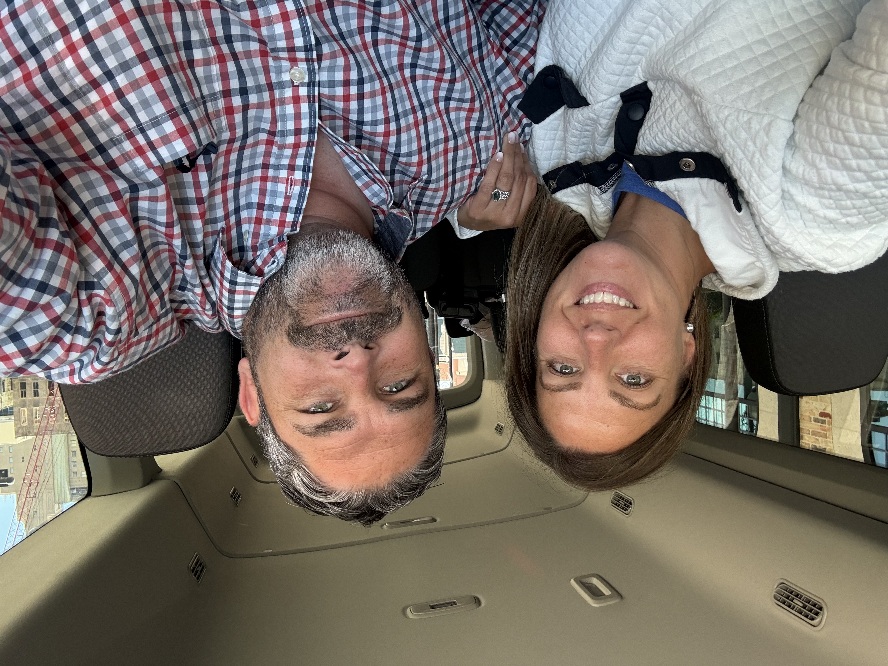

Meet Brad & Shay Fontenot
We're Brad and Shay Fontenot, the husband-and-wife duo behind Crawl Your Own Way basically two people who decided regular date nights needed a little more adventure.
We created Crawl Your Own Way because we love good food, good drinks, fun people, and finding new places to enjoy around Southeast Texas. Somewhere along the way, that turned into winery crawls, margarita crawls, coffee crawls, thrift shopping, concerts, progressive dinners, and whatever other fun idea we come up with next.
One of our favorite parts of Crawl Your Own Way is partnering with locally owned businesses. Every crawl gives us the chance to introduce people to local restaurants, shops, bars, boutiques, coffee spots, and hidden gems while supporting the people who make our community special.
Our motto is pretty simple:
Eat, Drink & Be Merry and Crawl Your Own Way!
Whether you come with your best friends, your spouse, your mom, or show up ready to make new friends, our goal is for you to laugh too much, try something new, and leave with a story worth telling.
We plan the stops, handle the details, and keep the fun going.
You just show up ready to crawl.
— Brad & Shay Fontenot